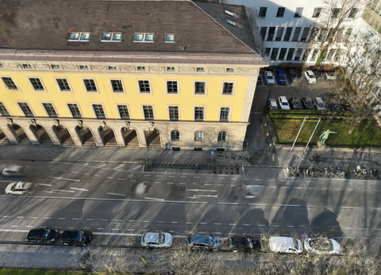

建筑外观建档与远程复核
把现场照片
变成可交接的建筑记录
外观照片散在不同文件夹，远程沟通时很难说明具体位置。将照片与重建视角放在一起，标记需要复核的区域，导出带图备注，方便下一位查看人员接着处理。
无需账号。人工记录保存在当前浏览器，可导出备份和交接。

使用工具
建筑外观复核
选择建筑和视角，查看照片，在图中记录待复核位置。示例采用已生成的测试视角渲染图。
正在加载建筑案例…
一次复核如何交接
整理照片
按建筑和采集日期归档，保留原始文件。先用三个公开案例熟悉操作，再处理自己的现场记录。
核对位置
切换不同观察视角，对照参考照片。画面不清楚的区域记录为待复核，并写明需要补拍的内容。
导出记录
将标注截图和备注一起交接。JSON文件可在本工具中恢复记录；打印报告可由浏览器保存为PDF。
为现场复核准备资料
运维人员可以提前查看建筑外观，整理需要补充观察的位置。资料管理人员能够把分散的照片与复核说明放入同一份建筑档案。
当前提供多视角图像查看与人工标注。备注对应图像位置，重建结果用于外观参考；工程尺寸、构件损伤和维修结论仍需专业现场核查。
重建与网页分别运行
单目深度和稀疏几何约束用于离线3DGS训练。这个公开网页加载已生成结果，不向训练服务器发送照片，也不在浏览器里启动训练。
当前展示来自TUM2TWIN公开数据，属于功能演示案例。现场照片可直接在本机标注；新增成对重建案例需完成离线重建并更新案例清单。
了解局部校准实验研究依据
保留完整的实验过程
固定24视角的多种子比较、模块消融，以及局部校准在不同建筑上的表现均单独报告。